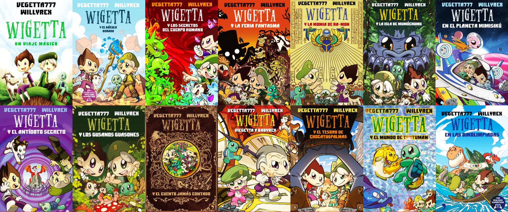
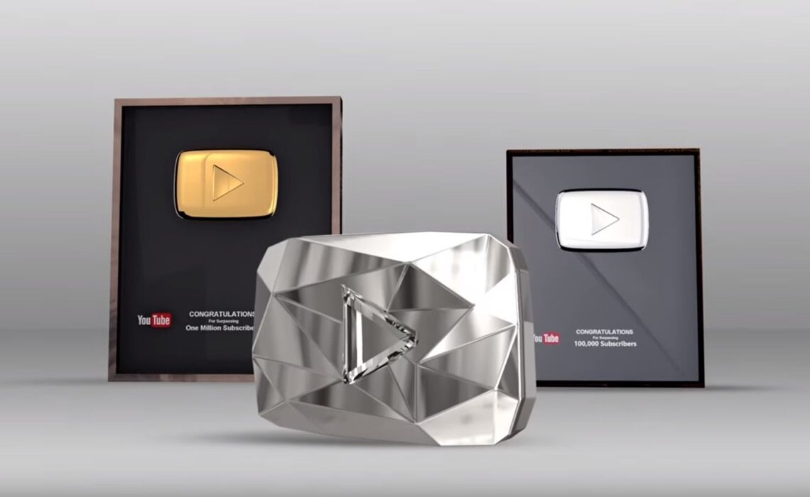

BIOGRAFIA
Nació el 12 de abril de 1989 en Madrid, España, mudándose a Alcorcón a los cinco años. Desde temprana edad tiene interés por los videojuegos, siendo su primera consola una Game Boy, pasatiempo que lo motivaría, junto a otros aspectos, a subir vídeos en YouTube. Estudió Auxiliar de enfermería y se graduó como enfermero auxiliar.
En 2014 se mudó junto con Willyrex a Los Ángeles, ciudad en la que vivieron por un tiempo antes mudarse a Andorra, país en el que reside en la actualidad.
CARRERA
El canal de Vegetta777 fue creado en marzo del 2008, pero no fue hasta el 21 de febrero de 2012 que subió su primer vídeo a YouTube titulado Uncharted 3: ¡presentación del canal!.104 Con el paso del tiempo fue subiendo más videos sobre distintos videojuegos manteniendo siempre una variedad de contenido en su canal, siendo Minecraft el videojuego del que más hace contenido.11 Tras llegar a la meta de diez millones de suscriptores, fue premiado en octubre del 2015 con el botón de diamante de YouTube, convirtiéndose en el primer español en ser reconocido con uno.12
Durante su recorrido en la plataforma ha realizado colaboraciones con distintos creadores de contenido para subir videos jugando a videojuegos juntos, entre los cuales están Willyrex, el Rubius, Arsilex, Lexosi, Herny, Fargan, Staxx y otros múltiples streamers del habla hispana. Entre sus series más icónicas se encuentran las de Resident Evil, Grand Theft Auto Online, PUBG, Uncharted y Minecraft.13
PROYECTOS
Ha sido creador y participante de proyectos dentro de su canal de YouTube, así como de otros proyectos que, aunque relacionados con su contenido y sus aficiones, se alejan del mundo de esta plataforma.
Series de Minecraft: a lo largo de su carrera, Vegetta777 ha creado distintas series de Minecraft, cada una con un enfoque diferente. Entre las series más populares se puede destacar Planeta Vegetta, las diversas temporadas de Karmaland junto a otros creadores,14 Apocalipsis Minecraft,15 Minecraft con Noobs y Piratas (también junto con otros creadores de contenido, como Alexby, HeRny, Arsilex, etc.).
Libros Wigetta: junto con Willyrex, Vegetta777 ha publicado una serie de libros para niños y jóvenes que narran las aventuras de sus dos personajes, Vegetta y Willy, los cuales son acompañados por sus mascotas Vakypandy y Trotuman. En sus aventuras se encuentran con diversos personajes y se ven envueltos en distintas situaciones que ameritan una solución.18 El primer libro de esta saga fue publicado en el año 2015,19 y hasta el 2022 se han publicado 18 libros.
Mad Lions: en colaboración con Willyrex, Vegetta se convirtió en uno de los socios mayoritarios de MAD Lions, un equipo de esports español.
Serie animada: Willyrex y Vegetta publicaron los capítulos de Wigetta, una serie animada con diseño en 2D dentro de la plataforma Youtube en un canal con el mismo nombre.22 Dentro de la serie se muestran las aventuras de los personajes Willyrex y Vegetta, que se encuentran en situaciones en las que deben ayudar a ciertos personajes a cumplir sus deseos, mientras cumplen ellos mismos los suyos. El primer capítulo obtuvo muchas visitas por parte de la comunidad de ambos youtubers, así como los capítulos subsecuentes.23 Hasta el 2022, se han subido 10 capítulos de la serie.
PREMIOS Y RECONOCIMIENTOS
SILVER CREATOR AWARD-Otorgado a los creadores que obtienen la cantidad de 100 000 (cien mil) suscriptores en su canal de YouTube.
GOLD CREATOR AWARD-Otorgado a los creadores que obtienen la cantidad de 1 000 000 (un millón) de suscriptores en su canal de YouTube.
DIAMOND CREATOR AWARD-Otorgado a los creadores que obtienen la cantidad de 10 000 000 (diez millones) de suscriptores en su canal de YouTube.

